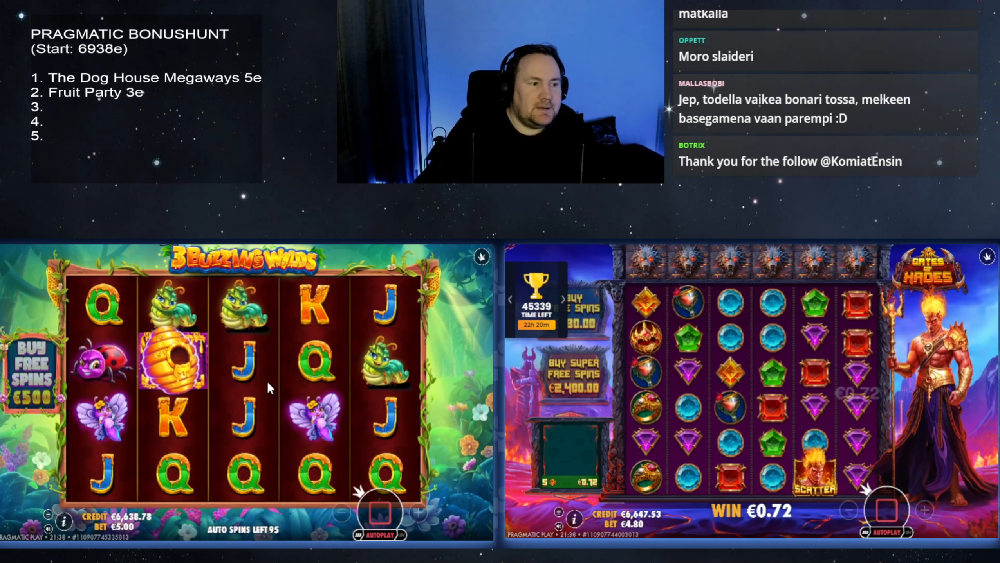

David Severa
Mozaika myšlenek.
Úzkost a deprese u mladistvých
Skokový nárůst koresponduje s masivním rozšířením smartphonů.
Vidina snadných peněz:

Rodiče v západní Evropě (2015): 34 min denně v týdnu, 97 min o víkendu.
Dnes 14 minut "tváří v tvář"
Děti trávící >2h u obrazovky mají nižší skóre v testech jazyka a myšlení.
Čím více času děti tráví u obrazovek (9-11 let), tím vyšší je pravděpodobnost k sebepoškozování a sebevražedným sklonům (11-15 let).
Zapisováním na notebooku si studenti pamatují méně než při psaní tužkou.
Seškrtali klasiky na patnáctiminutový rozhlasový program, pak je znova seškrtali, aby se vešly na jednu stránku, a nakonec to dotáhli na deseti nebo dvanáctiřádkové heslo v naučném slovníku... Ale našlo se mnoho těch, kteří všechno, co věděli o Hamletovi, vyčetli z jednostránkového výtahu v knížce, která hlásala: Teď si můžete konečně přečíst všechny klasiky: držte krok se sousedem!— 451 stupňů Fahrenheita
Je ti jasné, kam to vede? Z dětského pokoje na univerzitu a zpátky do dětského pokoje. To je graf intelektuálního vývoje za posledních pět století nebo o trochu déle.
Zahrňte ho vším pozemským blahem, zaplavte ho celého až po krk štěstím... dejte mu takový hospodářský blahobyt, aby nemusel nic dělat než spát a chroupat cukroví... a i za těchto okolností vám ten člověk z pouhé nevděčnosti, pro pouhý výsměch, provede lumpárnu. Pohrdne cukrovím a schválně se bude dožadovat nějaké škodlivé hlouposti... aby do vší té pozitivnosti a moudrostí přimísil zkázonosný živel své fantazie.— F. Dostojevskij: Zápisky z podzemí
"Naučil jsem se hledat štěstí tím, že vědomě omezuji své touhy, místo toho, abych se je snažil uspokojovat."